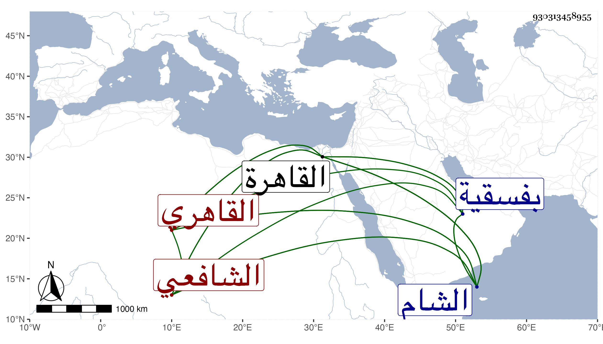

0902Sakhawi.DawLamic.ITO20230111-ara1.EIS1600.930313458955
Biography ID: 930313458955
40
محمد بن أحمد بن علي البدر المناوى الأصل القاهري الشافعي ويعرف بابن جنة وهي أمه نسب إليها بحيث هجر انتسابه لأبيه لكونها ابنة البدر محمد ابن السراج البلقيني . مات بعد تعلله مدة في ربيع الآخر سنة ست وسبعين بمنزله من حارة بهاء الدين وصلى عليه من الغد بجامع الحاكم ودفن بفسقية كان ابن خاله الولوى بن تقي الدين البلقيني أعدها لنفسه بمدرسته التي أنشأها بالقرب من الشريفية ويقال ان الولوى دفن بالشام في فسقية كان هذا أعدها لنفسه فكانت اتفاقية عجيبة ، كان باشر النقابة بالشام عند قاضيه زوج أمه السراج الحمصي وقتا وخطب عنه بالجامع الأموي وكان غير واحد من الأعيان كالبلاطنسي يقدم الصلاة خلفه على قاضيه وحصل هناك وظائف وتمول وأنشأ بالقاهرة دارا متوسطة بجوار محل دفنه ، وناب في القضاء عن العلم البلقيني ولكنه لم يتعاط الأحكام بالقاهرة إلا نادرا ، كل ذلك مع كونه عريا من الفضائل وان شارك ابن خاله في مسمى الأخذ عن المجد البرماوي وغيره عفا الله عنه .
